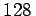

Beim AES werden hintereinander über mehrere Runden Substitutionen und Permutationen ausgeführt. Zunächst wird ein geheimer Schlüssel gewählt. Die Blocklänge im zu verschlüsselnden Klartext und die Schlüssellänge können , 192 oder 256 Bits betragen. Die verschlüsselten Klartextblöcke bilden den Geheimtext, der die gleiche Länge wie der Klartext hat. Aus diesem kann mit einem inversen Algorithmus und dem Schlüssel wieder blockweise der Klartext rekonstruiert werden. Die aus dem Schlüssel erzeugten Rundenschlüssel werden dabei im Vergleich zur Verschlüsselung in umgekehrter Reihenfolge eingesetzt.
Die Stärke dieses Chiffrierungsverfahrens liegt in der Konstruktion der Abbildungen, die in den einzelnen Iterationsrunden angewendet werden. Die einzige nichtlineare Substitution findet man in der Operation ,,SubBytes``. Zu ihrer Beschreibung werden die zu transformierenden Blöcke als Elemente eines endlichen Körpers aufgefaßt. Alle Details zum Algorithmus findet man in Lit. 5.37. Obwohl der AES-Algorithmus bis ins Detail offengelegt wurde, sind bis heute keine realistischen Angriffsmöglichkeiten bekannt geworden.
Von 1977 bis 2001 diente das DES-Verfahren als offizieller US-Verschlüsselungsstandard für vertrauliche Daten (s. Lit. 5.36 und auch 22.7, S. 350). Im Jahre 2001 wurde vom NIST (National Institute of Standards and Technology) nach einer weltweit geführten Diskussion eine Variante des von J. DAEMEN und V. RIJNMEN vorgeschlagenen Rijndael-Algorithmus als neuer Verschlüsselungsstandard eingeführt.
Beim DES-Algorithmus werden Permutationen und nichtlineare Substitutionen hintereinander ausgeführt. Der Algorithmus verwendet einen 56 Bit langen Schlüssel. Genauer, man benutzt einen 64-Bit-Schlüssel, in dem aber nur 56 Bit beliebig wählbar sind; die restlichen 8 Bit ergänzen Blöcke von 7-Bit-Zeichen auf ungerade Parität.